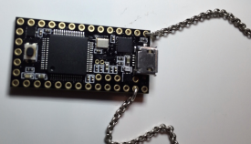
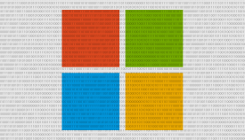

Recommended For You
- 1.  This Little USB Necklace Hacks Your Computer In No... 22 hours ago techcrunch.com techcrunch.com (sponsored) Greg Kumparak Apple
- 2. Still Not On Inbox By Gmail? They Just Gave All Users 10... 20 hours ago techcrunch.com techcrunch.com Vibrant Media Greg Kumparak TC
- 3. Uber Driver Charged With Rape In Boston a day ago techcrunch.com techcrunch.com AOL Forex Jordan Crook TC
- 4. OnePlus Is The Latest Smartphone Maker To Get... 2 days ago techcrunch.com techcrunch.com TechCrunch.com (AOL) Jon Russell Asia
- 5.  Microsoft Employee Pens The Worst/Best Corporate... 2 days ago techcrunch.com techcrunch.com TechCrunch.com (AOL) Alex Wilhelm LOL
- 6. Sean Parker Pledges $24 Million Toward A Stanford... 2 days ago techcrunch.com techcrunch.com TechCrunch.com (AOL) Sarah Buhr TC